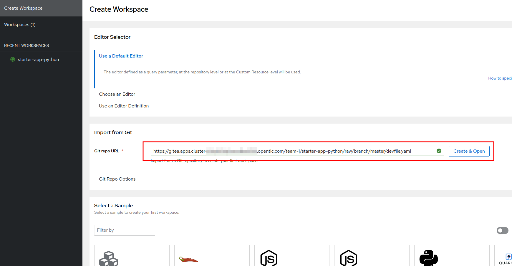
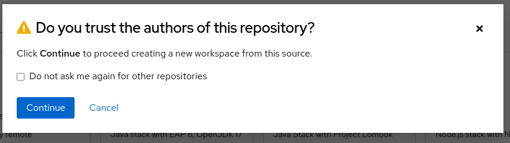
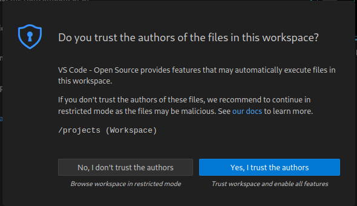
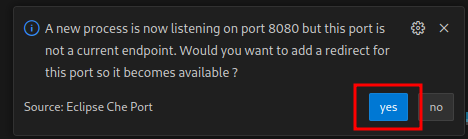
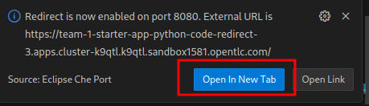
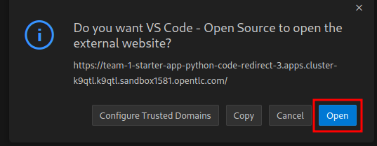

Control your Robot
Start Coding in Dev Spaces
To develop our flashy AI enhanced app, we will use OpenShift Dev Spaces, a web IDE that comes with every OpenShift installation. No need to setup IDEs, runtimes and tools on your laptop.
-
If you are not already logged in, login into the OpenShift Console with:
-
username:
team-1 -
password :
secret-password
-
-
In the OpenShift Console on the top right, click on the square icon and select Red Hat OpenShift Dev Spaces
-
Login with your OpenShift credentials
-
Give permissions if required
Next we are going to start a new Workspace where all the editing is done and we will initialize it with a DevFile.
| A DevFile is a definition for environment, tooling, settings and runtimes for our development Workspace. No more endless installations and configurations. We will be ready to hack right away. Since a matching DevFile is already checked into our Git repo, we can use it directly to initialize a workspace. |
-
Select Create Workspace in the left menu
-
Enter Git Repo URL :
https://gitea.apps.example.com/team-1/starter-app-python/raw/branch/master/devfile.yaml
You could also find the url to this DevFile manually by opening your Gitea, navigate to the repo starter-app-python and then devfile.yaml. Click on "Originalversion / Raw" and
copy the URL.
|
-
Click on Create and Open
 -
"Trust" the repo clicking Continue

Wait for the Workspace to deploy (this may take some time). Once your Workspace is up and running, you should see a view that looks familiar if you have used VSCode before.
We have prepared some sample code that you can use to quickly get started with your app.
-
If you see a Popup asking you to "Do you trust the authors", click check Always … and click Yes …

Next we will clone the starter code for our robot control app into our Workspace.
-
On the left side click on the button Clone Repository
-
In the form at the top enter the git url
https://gitea.apps.example.com/team-1/starter-app-python.git -
Hit Enter
-
In the next form keep the path as is (
/projects) and hit Enter again -
In the next dialog click on the Open button to reopen the workspace in this directory
You will now see the starter code on the left side.
This is a Python application that is served as a REST API server through the Gunicorn framework. You will call the endpoints through a website and the app in turn will call the endpoints of the Robot.
Connecting the App to Endpoints
Our app is running in a Dev Spaces container. We need to call the Robot API as well as the Inferencing API to do our coding magic.
So let’s go ahead and set up these connection variables. Edit the file config.py to add your inferencing endpoint that you created in the previous chapter.
Replace the following placeholders:
-
<REPLACE_WITH_ROBOT_NAME>:
gort -
<REPLACE_WITH_INFERENCING_API>
(The Object Detection Service from the DataScience chapter)
-
<REPLACE_WITH_INFERENCING_API_TOKEN>
(The Token of the Object Detection Service from the DataScience chapter)
| Note that Dev Spaces saves your file directly while you edit it. No need to save manually. And as an added bonus gunicorn reloads your python app, so there is also no need to restart you app or even reload the Robot control page. |
The Robot API
Before starting with the app, let’s take a moment to have a look at the Robot REST API that we will be calling.
It is fairly simple:
| Action | Description |
|---|---|
|
Drive forward by length |
|
Drive backwards by length |
|
Turn left by degrees |
|
Turn right by degrees |
|
Returns a base64 image of the current camera image |
|
Returns the status of the robot |
|
Returns the current power of the robot |
|
Returns the distance to an object in front of the robot, max value is 3000 mm |
For testing purposes you can call the Robot API directly from your Workspace Terminal with curl.
-
Open a new Terminal by clicking on the "Hamburger" menu (top left), then Terminal > New Terminal
-
To drive forward 2 units (make sure your Robot is not falling off the table), enter and execute:
export ROBOT_NAME=gort
curl -X POST http://api.hub-controller.svc.cluster.local/robot/forward/2 -d user_key=${ROBOT_NAME}| Some Browsers will ask you wether to allow pasting text. Approve this to proceed. |
Awesome, right? You are now an official robot pilot.
To retrieve a camera image and save it as a file:
export ROBOT_NAME=gort
curl -v http://api.hub-controller.svc.cluster.local/robot/camera?user_key=${ROBOT_NAME} | base64 -d > image.jpgYou will find the image file as image.jpg in the root folder. Click on it to view.
That was neat, but of course you want to give the robot some personality with your code. Let’s move on to configure the app.
Start the App
To start the app you can use a task that is defined in the DevFile and runs all the pip and Python commands under the hood.
Starting the App through the Workspace Task
-
In the top left, click on the "Hamburger" menu > Terminal > Run Task …
-
In the selection menu at the top, click on devfile
-
Then click on devfile: Run the application
This will install the Python dependencies and start the server of your app.
Open the Robot Control Page
| Once the Python Gunicorn server has started, you will see two Popup windows in the bottom right corner that you will need to approve. These will setup a port forwarding and publish a Route in OpenShift through which you can reach the website of your app running the Workspace. |
-
Click on Yes:
 -
Click on Open in new tab
 -
Click on Open

A new Browser tab with the web interface of the Robot Control app will open. Make sure you are on http:// if the page does not open.
If you missed the Popups
Click here to restart the Control Page
If you have missed any of the Popups, you need to end and restart the process:
-
Click on the garbage can icon on the right of the terminal
-
Now restart the Gunicorn server with the task as explained above
Robot Control Page Overview
This webpage has a few buttons that essentially just call REST endpoints in your app. You will use it to start your robot control code. The website features a Run button that you will use to execute your code.
The buttons:
-
Check Status - Calls the app to see if the robot is connected
-
Initiate Run - Calls your
startRobot()function in theapp.py. This is where you will add your code -
Emergency Stop - Stop execution of you app
Now to check if everything is setup correctly and your app can reach the robot:
-
The Robot Control Page will now show a live camera view
-
On the Robot Control Page click on Check Status
You should see a confirmation that your Robot is doing ok. If not have a look at the console output in your Dev Spaves Workspace and recheck config.py.
First Code: Robot Movement
To make things a bit easier some helper functions are already in place, for example to create REST requests for the robot operations and to work with the array response coming from the inferencing service.
Let’s write some code and drive our robot, but this time from our code:
-
Open the file
app.py -
Look for the function
startRobot()and the comment# Drop your code here -
Add a
move_forward()function call with 10 units, so your code looks like this (watch out for Python indentation):
# Drop your code here
move_forward(10)
print('Done')-
Now back on your Robot Control Page click on the Run button
If all goes well your robot should move forward. Congratulations, your robot has gained a bit of conciousness!
If it doesn’t move, have look at the Terminal output in Dev Spaces and recheck your config.py entries.
| Sometimes the auto-reload of the app doesn’t work and the app stops, you’ll see this in the terminal window. If this happens, just follow the steps above under If you missed the Popups and the app will restart. |
Some more movement
Now let the robot drive forward, look left and right and then retreat again.
Edit the the function startRobot() again so it looks like this:
# Drop your code here
move_forward(10)
turn_left(90)
turn_right(180)
turn_left(90)
move_backward(10)
print('Done')Run the code by clicking the Run button.
Wow, almost a robot ballet there.
Test the distance sensor
To test the distance sensor you can replace your code with this one. You may want to save your previous code somewhere.
# Drop your code here
dist = distance()
print ('Got distance -> ', dist)
print('Done')Run the code with the Run button as usual. Hold your hand in front of the sensor and see how the value changes. Pretty cool. No more bumping into stuff.
Robot Vision
Our robot is still a bit blind so let’s work with the camera and the image detection model now.
We have two functions that will help us:
-
take_picture_and_detect_objects()- gets a camera image, runs it through the inferencing and returns an array of detected objects -
find_highest_score(objects)- returns the object with the highest score.
The object itself will have these fields that you can use:
-
object class- what object class was detected (will be 0 for a fedora) -
confidence_score- How certain is the inferencing service that this is actually the detected object (the higher the better) -
x_upper_left- Bounding box upper left corner x coordinate -
y_upper_left- Bounding box upper left corner y coordinate -
x_lower_right- Bounding box lower right corner x coordinate -
y_lower_right- Bounding box lower left corner y coordinate
Change your function startRobot() code to detect an object through the camera and print the resulting object:
# Drop your code here
objects = take_picture_and_detect_objects()
coordinates = find_highest_score(objects)
if coordinates:
print(f'''Object with highest score -> [
confidence score: {coordinates.confidence_score},
x upper left corner: {coordinates.x_upper_left},
y upper left corner: {coordinates.y_upper_left},
x lower right corner: {coordinates.x_lower_right},
y lower right corner: {coordinates.y_lower_right},
object class: {coordinates.object_class} ]''')
else:
print('No objects found')
print('Done')-
Now place some objects in front of the camera and execute your code by pressing the Run button
-
Have a look at the Console output in your Dev Spaces Workspace
-
Place a fedora in front of the camera, run your code again and see if that makes a difference:
You should now see an output similar to this :
Object with highest score -> [
confidence score: 0.8367316560932,
x upper left corner: 296.75372999999996,
y upper left corner: 321.65746,
x lower right corner: 515.7144099999999,
y lower right corner: 477.20844,
object class: 0.0 ]
Note that we have found a Fedora (object class = 0) and are pretty certain of of it (confidence score = 0.8).
The robot control page will also display the last image from the camera every 5 seconds. You can use this to check the robot and camera alignment.
Set Up Your Robot Development Editor
To enhance your development experience and see what the robot sees in the IDE, we provide two images with our example code that are constantly replaced when acquiring a new image:
-
static/current_view_box.jpg- current camera image with detection bounding boxes -
static/current_view.jpg- current camera image
Here’s an example of how to arrange the IDE to optimize your dev workflow:
Coding Exercises
To become more familiar with the robot controls (and have some more fun), here are two exercises for you. Use your new robot skills and change the application to handle an obstacle placed in the robot’s path:
First Exercise
Create code to simply guide your robot around a barrier. Just use the movement commands, approximate the distances and try to get your robot around the obstacle as good as possible.
Second Exercise
Of course hardcoding distances into you code will not work for changing environments. Imagine something is blocking your robots path at an unknown distance! Your mission is now to drive straight towards a barrier as fast as possible but stopping right before it (and yes, not crashing into it).
That means you will need to create a loop of driving and checking the distance. Notice that the current code runs in a while loop with the condition thread_event.is_set(). The execution can be stopped from the Stop button command and subsequent API call. Otherwise your robot might go wild on you.
At the moment there is a `break`command that exits the loop immediately after your code. But what about just letting it run until you have actually close enough to a barrier? You can use the `break`command when that condition is met and you want to exit the loop. Or you can keep the loop running so the robot can react to moving the barrier.
This is roughly what the loop looks like
# Drop your code here
while thread_event.is_set():
log_with_timestamp("Entering main control loop.")
# Put your checks and movement commands here
print('Done')
log_with_timestamp("Exited main control loop.")You can create this more prudent or more risky. Try different distances by moving the robot nearer or farther away from the barrier.
This is all about driving forward. No need for turns.
Expected outcome of this chapter
After this chapter you should know:
-
how to use the robot API to control your robot
-
how to do object detection on images taken by the robot
-
how to develop, test & run the robot control app in the coding environment provided
If anything is unclear about these points, please talk to your friendly facilitators.
You now have all the tools required to create a fedora seeking robot. Head on over to the next chapter to put it all together.